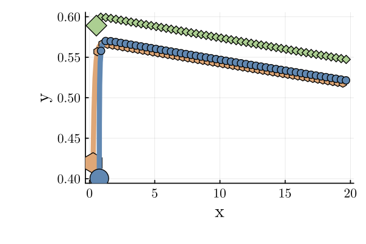

Flocking Example
For this example, agents implement the standard flocking goal of reaching consensus in velocities while staying a fixed distance away from all other agents. The constant sheaf $\underline{\R}^4$ on a fully connected communication topology along with potential functions summing the stan- dard consensus potential function on the velocity components and the fixed distance potential function with $r^2 = 5$ on the position components. Each agents’ objective is to minimize total control activation. Additionally, a designated leader agent tracks a constant rightward velocity vector. The results of this controller run for 65 iterations are shown below. Computing the distance between each agent confirms that they reached the desired pairwise distance of $\sqrt{5}$.
using Test
using AlgebraicOptimization
using LinearAlgebra
using BlockArrays
using Plots
include("../../../examples/paper-examples/PaperPlotting.jl")
using .PaperPlottingSet up each agent's dynamics: $x(t+1) = Ax(t) + Bu(t)$
dt = 0.1 # Discretization step size
A = [1 dt 0 0; 0 1 0 0; 0 0 1 dt; 0 0 0 1]
B = [0 0; dt 0; 0 0; 0 dt]
C = [1 0 0 0; 0 0 1 0]
system = DiscreteLinearSystem(A, B, C)DiscreteLinearSystem([1.0 0.1 0.0 0.0; 0.0 1.0 0.0 0.0; 0.0 0.0 1.0 0.1; 0.0 0.0 0.0 1.0], [0.0 0.0; 0.1 0.0; 0.0 0.0; 0.0 0.1], [1 0 0 0; 0 0 1 0])Initialize the weight matrices such that the objective only concerns velocities
Q_leader = [0 0 0 0; 0 50 0 0; 0 0 0 0; 0 0 0 50]
Q_follower = zeros(4, 4)
R = I(2)2×2 LinearAlgebra.Diagonal{Bool, Vector{Bool}}:
1 ⋅
⋅ 1Define the parameters for the MPC
N = 10
control_bounds = [-2.0, 2.0]
params1 = MPCParams(Q_leader, R, system, control_bounds, N, [0.0, 1.0, 0.0, 0.0])
params2 = params3 = MPCParams(Q_follower, R, system, control_bounds, N)MPCParams([0.0 0.0 0.0 0.0; 0.0 0.0 0.0 0.0; 0.0 0.0 0.0 0.0; 0.0 0.0 0.0 0.0], Bool[1 0; 0 1], DiscreteLinearSystem([1.0 0.1 0.0 0.0; 0.0 1.0 0.0 0.0; 0.0 0.0 1.0 0.1; 0.0 0.0 0.0 1.0], [0.0 0.0; 0.1 0.0; 0.0 0.0; 0.0 0.1], [1 0 0 0; 0 0 1 0]), [-2.0, 2.0], 10, [0.0, 0.0, 0.0, 0.0])Define the potential functions
\[q(x) = (x' * x - 5.0)^2\]
\[p(x) = [x[2], x[4]]' * [x[2], x[4]] + q([x[1], x[3]])\]
q(x) = (x' * x - 5.0)^2
p(x) = [x[2], x[4]]' * [x[2], x[4]] + q([x[1], x[3]])p (generic function with 1 method)Define the constant sheaf
c = PotentialSheaf([4, 4, 4], [2, 2, 2], [q, q, q])
set_edge_maps!(c, 1, 2, 1, C, C)
set_edge_maps!(c, 1, 3, 2, C, C)
set_edge_maps!(c, 2, 3, 3, C, C)2×4 Matrix{Int64}:
-1 0 0 0
0 0 -1 0Set up solver to perform MPC and solve the optimization problem with ADMM
x_init = BlockArray(rand(12), c.vertex_stalks)
prob = MultiAgentMPCProblem([params1, params1, params1], c, x_init)
alg = NonConvexADMM(1000.0, 10, 0.0001, 5000)
num_iters = 200200Run solver on MPC
trajectory, controls = do_mpc!(prob, alg, num_iters)(Any[[0.27337783283677886, 0.6900539847988832, 0.4193809819128289, 0.6220220152475692, 0.75270122465556, 0.033123795933771794, 0.4003568980226092, 0.6789289727649978, 0.5283597132349417, 0.7072595099015503, 0.5890590373352406, 0.05873652952055153], [0.3423832313166672, 0.8329426764767958, 0.4815831834375858, 0.4220220143327573, 0.7560136042489372, 0.2331237975250089, 0.468249795299109, 0.47892897177638694, 0.5990856642250967, 0.8406360153560662, 0.5949326902872957, 0.027969878547762294], [0.4256774989643468, 0.9041012456441881, 0.5237853848708616, 0.22202202416834493, 0.779325984001438, 0.43312379867994927, 0.5161426924767477, 0.27892897439174436, 0.6831492657607033, 0.907111766238134, 0.5977296781420719, 0.012577510873048224], [0.5160876235287657, 0.9394480483621392, 0.545987587287696, 0.10976178406489853, 0.822638363869433, 0.6331237980976652, 0.5440355899159222, 0.1382584115249085, 0.7738604423845168, 0.9400812832818638, 0.5989874292293768, 0.004879628877397111], [0.6100324283649796, 0.956928618107998, 0.5569637656941859, 0.05356942175273758, 0.8859507436791996, 0.8022355709643927, 0.557861431068413, 0.06782019359362053, 0.8678685707127032, 0.9563184740245579, 0.5994753921171164, 0.0010301609140768325], [0.7057252901757795, 0.9653799479798445, 0.5623207078694596, 0.025456242630400618, 0.9661743007756388, 0.8866438913614395, 0.5646434504277751, 0.03257624231980302, 0.963500418115159, 0.9641357371217496, 0.5995784082085241, -0.0008945143801471639], [0.8022632849737639, 0.9692787292737874, 0.5648663321324997, 0.011395983641816987, 1.0548386899117828, 0.92875805748035, 0.5679010746597554, 0.014948504585453548, 1.059913991827334, 0.9677884033940698, 0.5994889567705094, -0.0018565005630623984], [0.8991911579011427, 0.9708867942726527, 0.5660059304966814, 0.004364324214825413, 1.1477144956598178, 0.9496994929457789, 0.5693959251183007, 0.00613256653552946, 1.156692832166741, 0.9694033404039937, 0.5993033067142032, -0.002336995929436253], [0.996279837328408, 0.9713521899561959, 0.5664423629181639, 0.000848034388758267, 1.2426844449543957, 0.9600562090910758, 0.5700091817718537, 0.0017238696366434813, 1.2536331662071403, 0.9699880626823267, 0.5990696071212596, -0.0025766728506475094], [1.0934150563240275, 0.9713554894782952, 0.5665271663570397, -0.000910035683382615, 1.3386900658635033, 0.9650611156640061, 0.5701815687355181, -0.00048053592763177503, 1.350631972475373, 0.9700519967547765, 0.5988119398361949, -0.0026959041858368917] … [18.557364579347006, 0.9579463692182366, 0.5202348848397302, -0.0024571517273464668, 18.79819835649758, 0.957946369214734, 0.5236796769864709, -0.002472900462277739, 18.810991366186645, 0.9579463692778166, 0.5496396734773021, -0.002591583147193291], [18.65315921626883, 0.9579463692122475, 0.5199891696669956, -0.002456028377109562, 18.89399299341905, 0.9579463692098044, 0.5234323869402431, -0.002471769912101164, 18.906786003114426, 0.9579463692736603, 0.5493805151625828, -0.0025903983381621786], [18.748953853190052, 0.9579463692072419, 0.5197435668292847, -0.0024549055404416405, 18.989787630340032, 0.9579463692044948, 0.523185209949033, -0.0024706398787853953, 19.002580640041792, 0.9579463692690863, 0.5491214753287665, -0.0025892140707976454], [18.844748490110778, 0.95794636920233, 0.5194980762752405, -0.0024537832171079963, 19.08558226726048, 0.9579463691986073, 0.5229381459611544, -0.0024695103620937836, 19.0983752769687, 0.9579463692638539, 0.5488625539216868, -0.00258803034485196], [18.94054312703101, 0.9579463691970965, 0.5192526979535297, -0.002452661406874011, 19.181376904180343, 0.9579463691923057, 0.522691194924945, -0.0024683813617904743, 19.194169913895085, 0.9579463678245534, 0.5486037508872016, -0.0025868471714278235], [19.03633776395072, 0.9579463691914172, 0.5190074318128423, -0.0024515401095048014, 19.277171541099573, 0.9579463691855905, 0.5224443567887659, -0.002467252877639328, 19.28996455067754, 0.9579463670488353, 0.5483450661700588, -0.0025856645332998514], [19.13213240086986, 0.9579463691851163, 0.5187622778018918, -0.0024504193247663016, 19.37296617801813, 0.9579463677328988, 0.522197631501002, -0.0024661249203480474, 19.385759187382423, 0.9579463666181524, 0.5480864997167288, -0.002584482433033869], [19.227927037788373, 0.9579463691785607, 0.5185172358694151, -0.002449299052423863, 19.468760814791423, 0.9579463669493393, 0.5219510190089671, -0.002464997473310306, 19.481553824044237, 0.9579463663666593, 0.5478280514734255, -0.0025833008717894923], [19.323721674706228, 0.9579463691714679, 0.5182723059641727, -0.002448179292243309, 19.564555451486356, 0.9579463665137187, 0.5217045192616361, -0.0024638705390030895, 19.577348460680902, 0.957946366208018, 0.5475697213862466, -0.002582119850023455], [19.419516311623376, 0.9579463677121606, 0.5180274880349484, -0.0024470600548804297, 19.66035008813773, 0.9579463662587964, 0.5214581322077357, -0.0024627441185469685, 19.673143097301704, 0.9579463660972695, 0.5473115094012443, -0.002580939367840572]], Any[[1.4288869167791254, -2.0000000091481187, 2.000000015912371, -2.000000009886108, 1.3337650545451591, -0.30766650972789233], [0.7115856916739235, -1.9999999016441237, 2.0000000115494037, -1.999999973846426, 0.6647575088206777, -0.1539236767471407], [0.35346802717951054, -1.122602401034464, 1.9999999941771582, -1.4067056286683584, 0.32969517043729757, -0.07697881995651112], [0.17480569745858796, -0.5619236231216095, 1.6911177286672752, -0.7043821793128797, 0.16237190742694194, -0.038494679633202786], [0.08451329871846497, -0.2811317912233696, 0.8440832039704682, -0.35243951273817503, 0.07817263097191639, -0.019246752942239962], [0.03898781293942898, -0.1406025898858363, 0.42114166118910534, -0.17627737734349475, 0.03652666272320154, -0.009619861829152346], [0.01608064998865288, -0.07031659426991574, 0.20941435465428884, -0.08815938049924088, 0.016149370099238603, -0.004804953663738546], [0.004653956835431788, -0.035162898260671455, 0.10356716145296846, -0.04408696898885978, 0.005847222783330079, -0.002396769212112563], [3.2995220993002454e-5, -0.01758070072140882, 0.050049065729302775, -0.022044055642752563, 0.0006393407244976475, -0.001192313351893823], [-0.0023024143588666313, -0.008786927665659215, 0.022989974481251146, -0.011019245591322778, -0.0019891680159487076, -0.0005899049408577387] … [-5.4615577618887526e-11, 1.1238640408364119e-5, -4.821779180544074e-11, 1.1310672735108421e-5, -4.0027786638264986e-11, 1.1853509456219073e-5], [-5.9890780970505e-11, 1.1233502369045302e-5, -4.929604943886901e-11, 1.130550176574886e-5, -4.156286718745499e-11, 1.1848090311125051e-5], [-5.0056591241591936e-11, 1.122836667921846e-5, -5.3095574927855777e-11, 1.1300333157686367e-5, -4.5740373432165594e-11, 1.1842673645334782e-5], [-4.911804011090826e-11, 1.1223233336443155e-5, -5.88751789647315e-11, 1.1295166916118906e-5, -5.232319258920604e-11, 1.1837259456851591e-5], [-5.2334321484472985e-11, 1.1218102339849677e-5, -6.301641230503679e-11, 1.1290003033094658e-5, -1.4393005034600191e-8, 1.1831734241366553e-5], [-5.6793810979494737e-11, 1.1212973692095668e-5, -6.715210844061753e-11, 1.1284841511463123e-5, -7.75718142429294e-9, 1.1826381279722003e-5], [-6.300838267367769e-11, 1.1207847384996622e-5, -1.4526917908726326e-8, 1.127957291280418e-5, -4.306829695554871e-9, 1.1821002659821938e-5], [-6.555619077490085e-11, 1.1202723424389214e-5, -7.83559426271267e-9, 1.127447037741382e-5, -2.5149302827973322e-9, 1.181561244376731e-5], [-7.092752021365e-11, 1.1197601805540744e-5, -4.356206488237489e-9, 1.1269343072165828e-5, -1.5864131638994602e-9, 1.181021766037123e-5], [-1.4593073836375159e-8, 1.1192373628794384e-5, -2.549223395291556e-9, 1.1264204561209019e-5, -1.1074850044784984e-9, 1.1804821828830692e-5]])Plot results
PaperPlotting.plot_trajectories(trajectory, C)